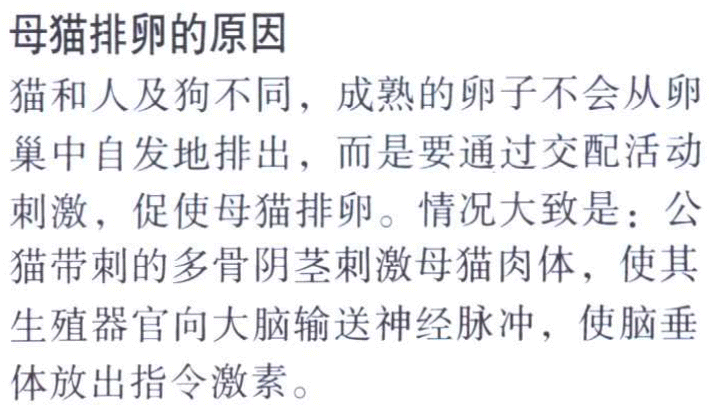
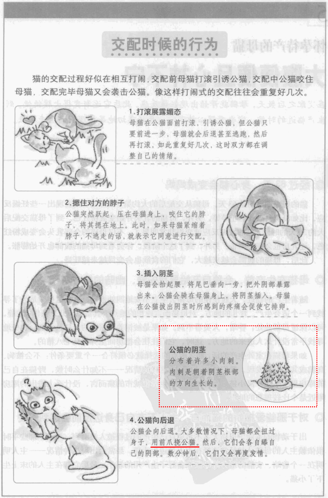
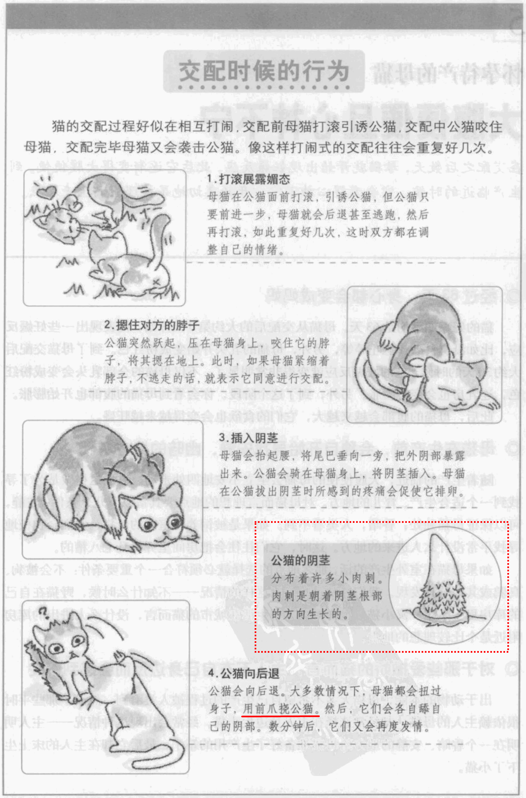

刚爬起来酒劲还在头昏脑胀，上网乱转发现国际一流和谐宜居之都「高学历精英社交圈」正在首页今日头条位置醒目应景推荐一条色目含量甚高的重要情报：
阿拉伯国家为什么不接收巴勒斯坦难民？可以作为「苔盟」素材。
正好结合当前局势，德意志民族神圣罗马帝国境内的难民最多，洋葱头绿庙最多，色目社区最多，每个社区的伊玛目牢牢控制住旗下包衣，说什么也不肯放手，还伙同当地党政军财四套班子在法律上对难民活动进行严格限制，于是难民欲当马瓦力（阿拉伯语原意「被释放的奴隶」）而不可得。
而相关伏笔在之前的注释当中已经准备好了，就是以国际一流和谐宜居之都现状和作者四十余年来在迷宫地下城恶人谷贼窝贼船当中与色目混混鸡鸣狗盗之徒斗智斗勇的亲身经历为基础的。这里简单复述一遍。
简单说，《幽州新闻》隔三岔五报道「回天有我」行动，「回天地区」就是回龙观天通苑两个「社区」，十几年前每个社区都有二十万以上的注册帐号。我得知该消息是由于2007年10月7日北京地铁五号线开通的新闻，特意强调有三站「天通苑北」「天通苑」「天通苑南」都没出社区，盎视记者现场报道时深情的感慨安置规模之宏大叙事。
后来我还在繁荣的简体中文互联网上与人民群众扯淡，说人口普查当中「阿拉善盟」一共只有十八万人，还不如幽州一个小区，不如改名「阿拉善街道」并组织居民委员会。然后有国际化大都市的人民群众对北京「社区」规模表示诧异，而国际一流和谐宜居之都的人民群众表示，二十万账号以上的小区北京至少有五个。我不知道除了「回天地区」之外还有哪三个，没去打听，这次人口普查什么情况，也不知道。
所以影射为列支敦士登，本位面历史当中就是维也纳佞臣为了削尖脑袋往上钻一路青云直上主席台，特意买了两个帝国直属庄园，合并起来成立「亲王国」，就能世袭帝国议会元老了。现在可以补充设定，也是当年安置拜占庭流亡基督徒的「难民营」，都有世袭伊玛目管理。
虽然我没有在「回天地区」的第一手素材，但是亲身经历当中住过的两个社区，很明显都有伊玛目存在。伪装成居民的包衣真的是一切行动听指挥，24×7待机随时接受组织交代的革命任务。无论什么时候，只要我出门，这些「难民」都能准时出现在行进路线上，按照剧本互相对话或者自言自语，并有肢体语言以丰富舞台效果。
后来在繁荣的简体中文互联网上，有通古斯太君得意洋洋肆无忌惮的炫耀，说当代满洲已经是十二旗编制了，多了正绿旗、镶绿旗、正黑旗、镶黑旗四个。由于黑皮包衣体貌特征突出很容易辨认，所以决定安排这帮讲一口流利汉语化作汉人模样混进汉人堆里追着中国籍汉族人狂喷「反汉贱种中国通」颠倒黑白混淆是非倒打一耙贼喊捉贼的新附军，都是两绿旗所属，其武德正好称为绿营（体制内）或绿林（体制外）。
而娱乐至死の色目逗哔在以《星际争霸》剧情炒作色目钦定大目标的时候，都不约而同的把绿人称为「虫族」，把遍地开花的社区称之为「菌毯」，铺到哪里，哪里就寸草不生。当时这帮难民把持了多少社区我不知道，但是看局势还没到鸠占鹊巢反客为主的时间点，还在润物细无声当中，所以用「苔藓」影射。而第七次人口普查结果应该是已经彻底改变了幽州人口结构，所以市面上活蹦乱跳叫嚣政治诉求的色目混混鸡鸣狗盗之徒，砥砺奋进八年来据我观察是呈递增趋势，增长速度越来越快，周边色目含量越来越高。
这些素材本来是准备丰富《异闻录》背景的，但是太阳底下没有新鲜事，《设定集》这边同样可以用上。根据亲眼所见亲耳所闻，除了「难民」本身一切行动听伊玛目指挥之外，在当地土生土长的「难二代」「难三代」也继承了家学渊源。无论是青壮年还是童年才俊，出现在我面前的演员都一样，坚决贯彻落实剧本的态度和敬业精神都没什么区别，有组织有纪律是肯定的。
又转了几圈，没发现什么色目含量甚高的重要情报，于是开始筛查色目含量不够高或不重要的情报。
在九省通衢の煎蛋之上，出现了一条素材。先就事论事，顺便补充一些背景知识：


 

一言以蔽之，床头吵架床尾和。
所以在前一篇设定「喵喵社」的基础上，补充设定「荆棘冲程」（þornhub
），以实现什么「天地交而万物通」「刚柔相摩八卦相荡」之类和谐理念。
其中第一个字母「þ
」本名就是「Throne
」，荆棘的意思。这个字母在中古时期的盎语当中取代了「ð
」，在其它日耳曼语言当中有所保留或者演化，比如在德语当中，荆棘是「Dorn
」。而德语「Hub
」本来就有「（活塞）冲程」的意思，与英语「hub
」那种原意车轮中心部或曰毂的意思有些差别。不过呢，无论按照什么含义理解，都充沛了人民群众喜闻乐见的敏因，不解释。
未完待续